Pantoufles en fourrure
Pantoufles en fourrure recyclée, créations artisanales québécoises — Les Fourrures Boréales. Créations artisanales de Lucie — Les Fourrures Boréales.
Toute la boutique · Articles en fourrure sur mesure
-
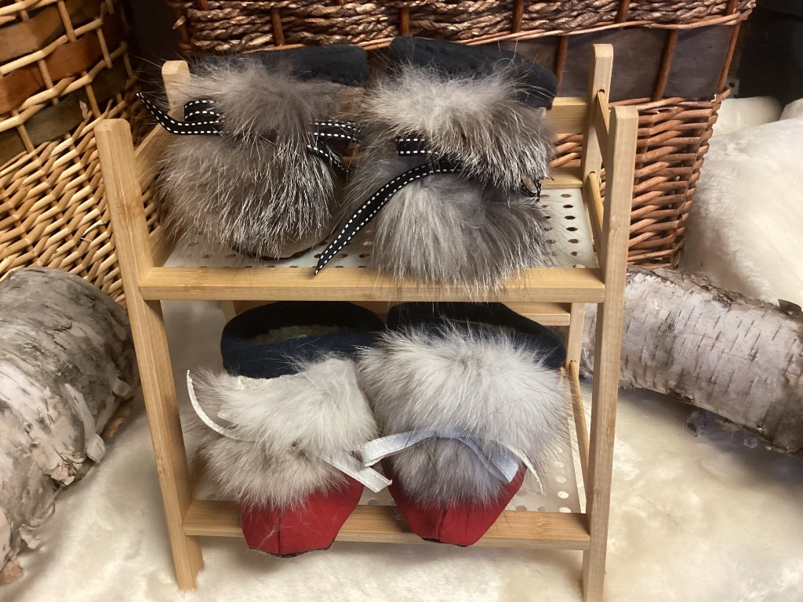
Pantoufles bébé 0-7 mois — fourrure recyclée N° 300 · Pantoufles en fourrure -
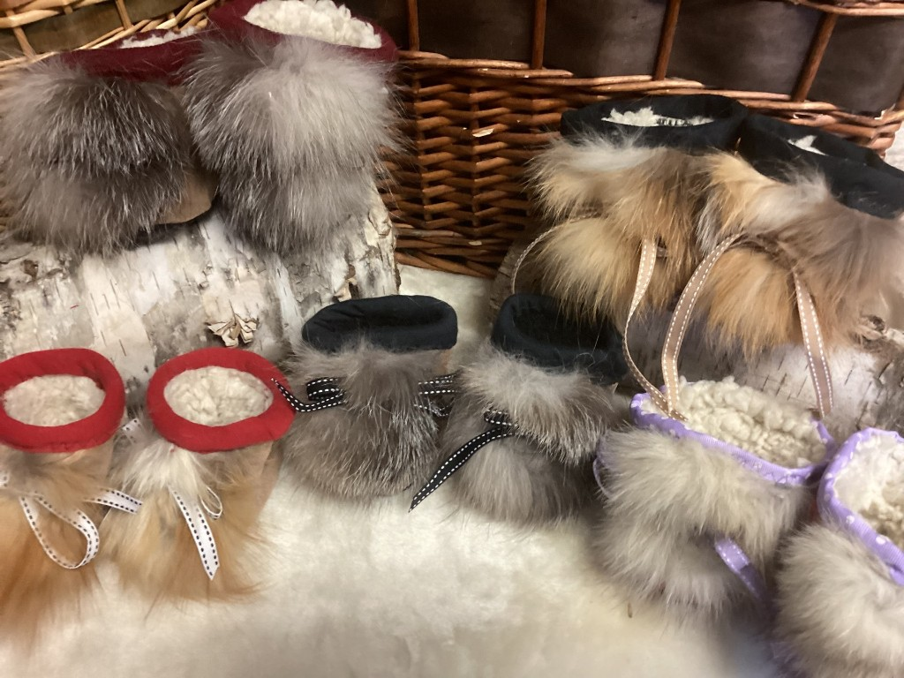
Pantoufles bébé 5-12 mois — fourrure recyclée N° 301 · Pantoufles en fourrure -
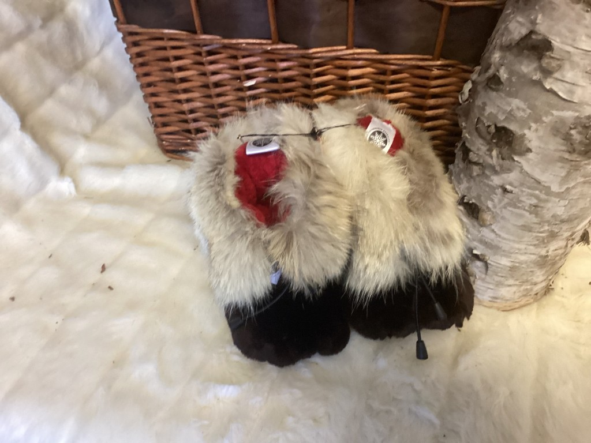
Pantoufles enfant 2-3 — mouton rasé et coyote N° 307 · Pantoufles en fourrure -
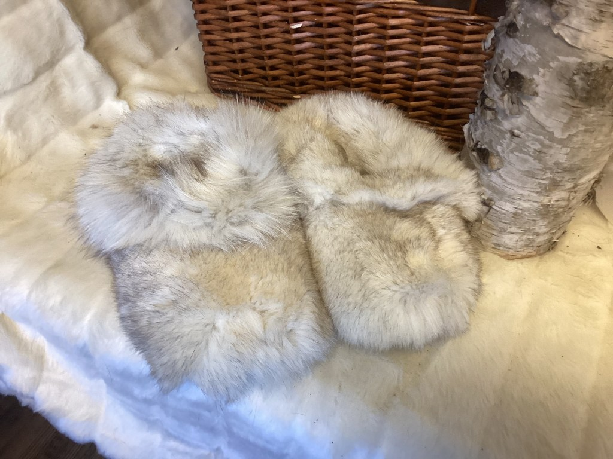
Pantoufles enfant 2-3 — renard N° 308 · Pantoufles en fourrure -
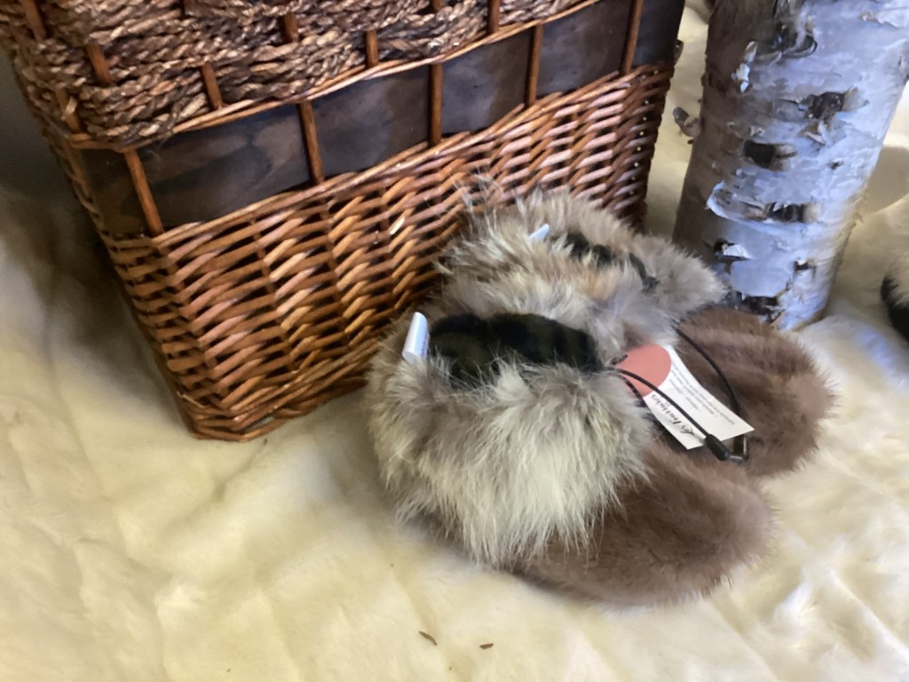
Pantoufles enfant 13-1 — vison et coyote N° 306 · Pantoufles en fourrure -
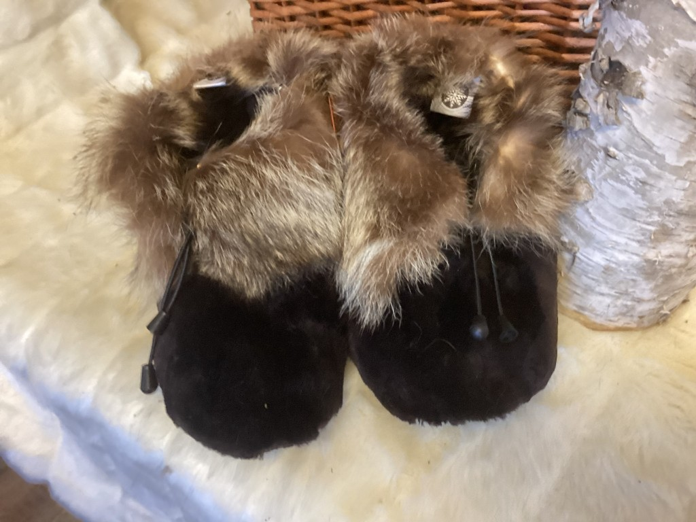
Pantoufles dame 7-8 — mouton rasé et chat sauvage N° 302 · Pantoufles en fourrure -
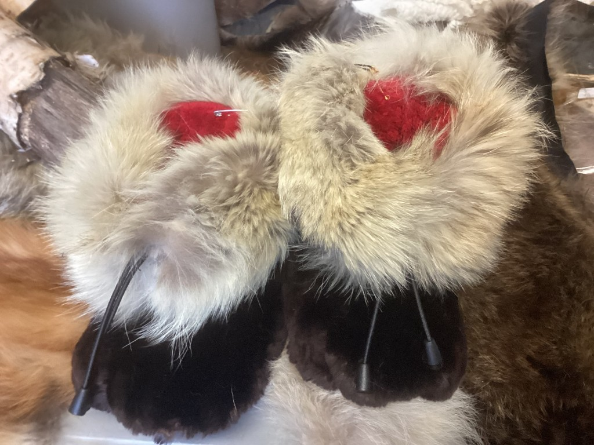
Pantoufles dame 8-9 — vison et coyote N° 303 · Pantoufles en fourrure -
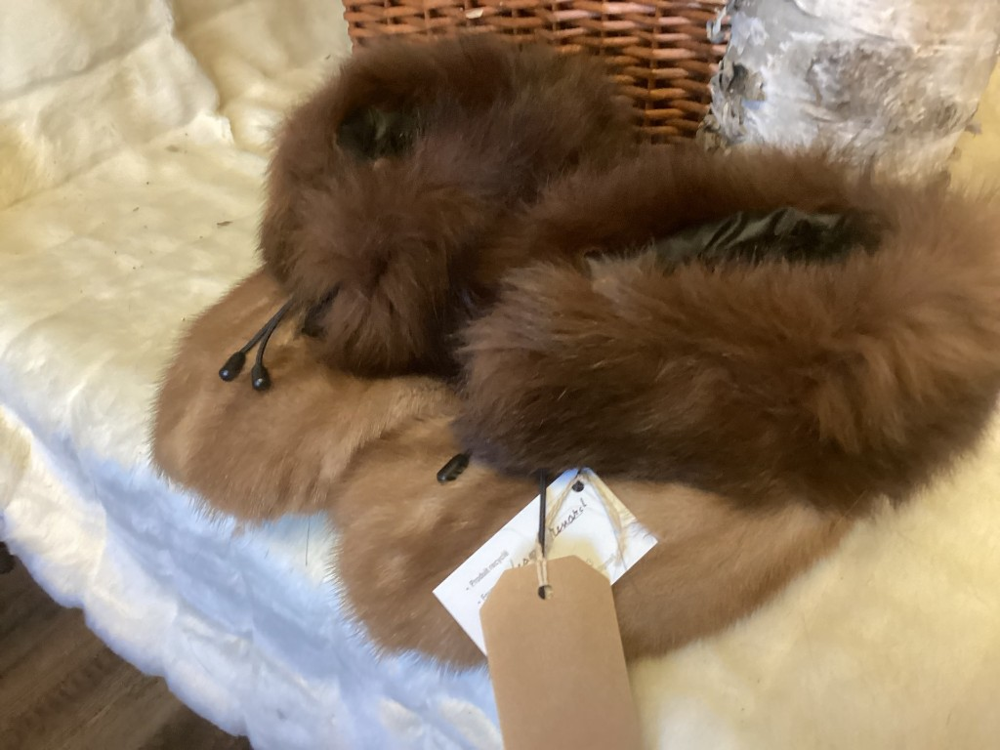
Pantoufles dame 8-9 — vison et renard N° 304 · Pantoufles en fourrure -
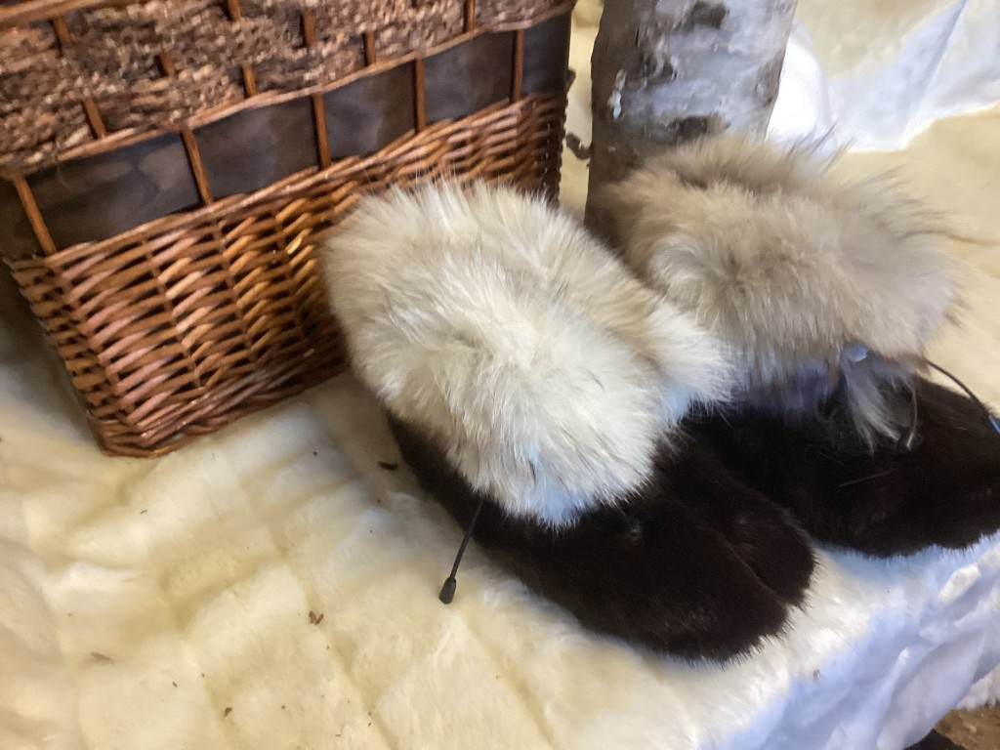
Pantoufles dame 9-10 — vison et renard N° 305 · Pantoufles en fourrure -
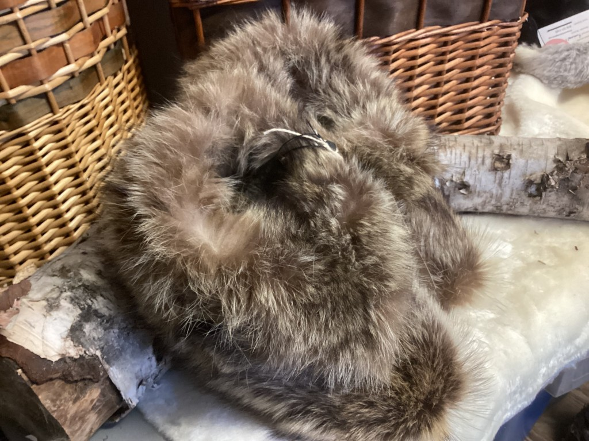
Pantoufles homme 10-11 — chat sauvage N° 309 · Pantoufles en fourrure -
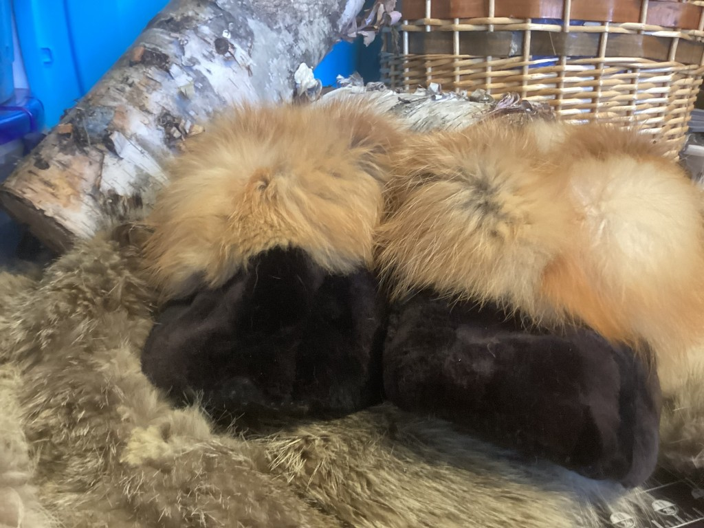
Pantoufles homme 10-11 — mouton et renard roux N° 310 · Pantoufles en fourrure